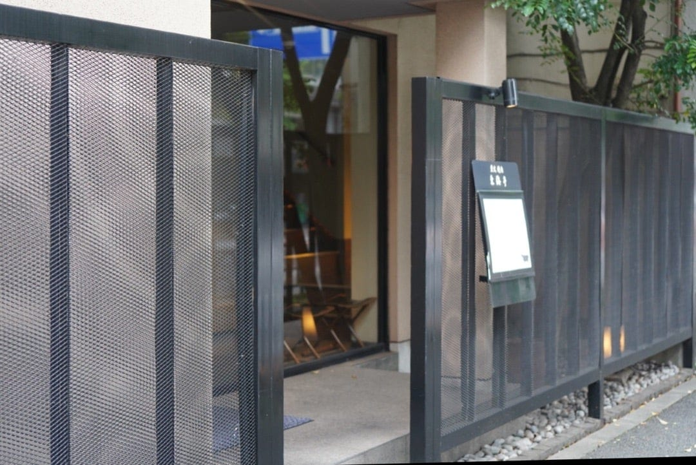

📷
東海亭（西麻布）― 西麻布交差点すぐ、松阪牛炭火焼肉の名店
「西麻布を代表する焼肉の名店。
知っている人だけが連れて行ける店が、ここにある。」
知っている人だけが連れて行ける店が、ここにある。」
― FOOTBALL CONNECTION 編集部コメント
FOOTBALL CONNECTION MEMBER
立教大学Rushers OB・高林尚太オーナーが経営。西麻布の地で本物の焼肉を提供し続ける、アメフトコミュニティが誇る一軒。
🥩 このお店について
西麻布交差点から徒歩数分。六本木・広尾・麻布という東京屈指のグルメエリアの中心に、
東海亭は構えている。
松阪牛を炭火で焼くスタイルは、素材の旨味を最大限に引き出す
シンプルにして最良の方法だ。
開業以来この地で愛され続けてきた実績が、
この店の格を何より雄弁に語っている。
CRAFTSMANSHIP & QUALITY
松阪牛×炭火という最高の組み合わせ
最高級銘柄・松阪牛を炭火で仕上げる。
遠赤外線の熱が肉の内側まで均一に通り、
外はこんがり、中はジューシーに仕上がる。
一口食べれば、なぜこの店がこれほど長く愛され続けているかが分かる。
西麻布という唯一無二の立地
六本木・広尾・麻布十番——東京でも屈指の大人のエリアに位置する。
「どこで食事をするか」がそのまま品格につながる場所で、
東海亭を選ぶことはその場に相応しい選択になる。
接待・会食・記念日、いかなる場面にも応える。
初めてでも迷わず入れる
「有名店」と聞くと構えてしまうことがあるが、東海亭はそうではない。
オーナーをはじめスタッフの対応は温かく、
初めての訪問でも自然とくつろげる雰囲気がある。
大切な人を連れて行って、絶対に外さない一軒だ。
🏈 アメフト関係者への一言
オーナーの高林尚太氏は立教大学Rushers OB。
アメフトで培った「準備・実行・結果」へのこだわりが、
この店の料理とサービスにも宿っている。
アメフト関係者として訪れれば、そんな文脈も含めて楽しめる。
懇親会の一次会として格上げしたいとき、
大切な仲間を接待・会食でもてなしたいとき、
OB同士でゆっくり話したいとき——
どんな場面でも「ここで正解だった」と思える店が東海亭だ。
アメフト仲間に「いい店知ってる？」と聞かれたら、迷わずここを勧めてほしい。
📅 おすすめ利用シーン
会食・
接待
接待
OB会・
食事会
食事会
記念日・
お祝い
お祝い
大切な人
との食事
との食事
チーム
打ち上げ
打ち上げ
西麻布の
夜を刻む
夜を刻む
📋 基本情報
| 🏪 店名 | 東海亭 |
| 📍 エリア | 東京都港区 西麻布 |
| 🚉 最寄駅 | 東京メトロ日比谷線 広尾駅 / 六本木駅 |
| 🏠 アクセス | 西麻布交差点すぐ |
| 🍽️ ジャンル | 松阪牛炭火焼肉 |
| 🔗 公式サイト | www.toukaitei.jp |
| 👤 オーナー | 高林尚太（立教大学Rushers OB） |